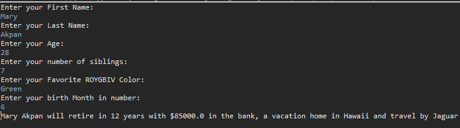
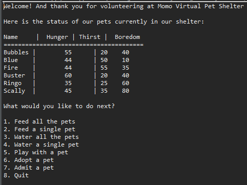

About Me
My name is Mary Akpan, I’m an Apprentice Software Developer at We Can {Code} IT, an accelerated Software Development bootcamp program that teaches Full Stack Java with focuses on test driven development. Prior to my journey to the coding bootcamp, I work as an investment specialist tasked daily to carry out duties such as reviewing of application, processing and putting application in good order to be sent out the fund company.
- Contact Information
- Phone: (614) 886-2306
- LinkedIn: www.linkedin.com/in/mary-akpan
- Github: https://github.com/islandspaces
Technical Skills
- Java
- Spring
- CSS
- HTML5
Projects
Fortune Teller
The user will enter their first and last name along with their age, birth month, favorite ROYGBIV color and number of siblings. Based on the information entered, the program will greet the user and tell them how many years they have left before retirement, how much money they have in their bank account, and their vacation spot.
- Fortune Teller: Click here to go to the project
- Skills: Java
- Tools: Eclipse IDE, Gitbash
Virtual Pet Shelter
Created a virtual pet shelter that houses virtual pets. Once the shelter was created, the user then had the ability to feed, water and play with any pet. The user also has the option to either adopt out a pet or intake new pets.
- Virtual Pet Shelter: Click here to go to the project
- Skills: Java, TDD, Object Oriented Programming (OOP)
- Tools: Eclipse IDE, Gitbash
Review Site

Created a reviews site with the use of spring boot and mvc app that displays a list of reviews allowing users to click on an individual review to see its details.
- Review Site: Click here to go to the project
- Skills: Java, OOP, TDD, Spring, HTML5
- Tools: Eclipse IDE, Sublime Text 3, Gitbash